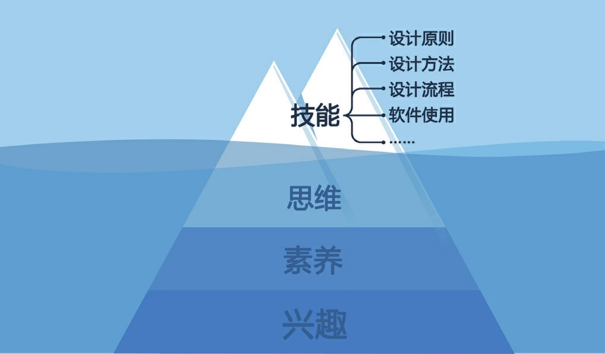

讀書心得：破繭成蝶
作為一個菜鳥該如何成長呢？
- 不要著急，不光看書，也多看一些設計網站上的文章，並研究好的產品，思考人家怎麼製作的
- 累積經驗，跟著公司專案或自創虛擬專案，最重要的是表述自己的思路，而不是只展示設計結果。因此專案中所學的總結與轉化成能與人交流的形式非常重要。
- 如果能結交同好是最好的，多練習將上述的內容與人交流，能更好地理清思路。
在未來的學習路上，要切記「技能」只是冰山一角，興趣、素養、思維是更深層的考核標準
清楚自己的能力圈，過去只要一項做到前 25%即能成功、現在需要兩項、未來需要三項。我的三叉戢目標是：Android 開發（語言使用、系統架構、數據處理）、產品設計（UI/UX, 專案管理, 跨領域溝通）、英日文溝通能力。
產品測試
現在腦海中的想法有哪些呢？
團隊、老師、振弘、振偉、義路、宜庭、我的目標
- 團隊：
- 老師：？
- 振偉：達成工作要求
- 振弘：畢業（需要 v3.0 上架）
- 義路：畢業（自己的專題 + Flora 協助要求）
- 宜庭：畢業（根據老師的指示協助）
- 我：畢業（這兩年透過這些資源機會變強）
現在比起把細節做滿，我覺得更重要的是理解與定義團隊目標
目前差在無法很好理解老師的想法，今天老師買了一本書放在實驗室，
我想鐵定是有想傳達的概念，就抓緊時間看看吧。
就目前狀況來看，我接觸不到核心資訊（或無法及時），因此我不會是主要負責人，
原本有想要把測試成果做到最好令人印象深刻，但那目前不是我該做的工作。
我想爭取加入嗎？會想從中學習，但不要急。把委派給我的工作做好，這樣就好。